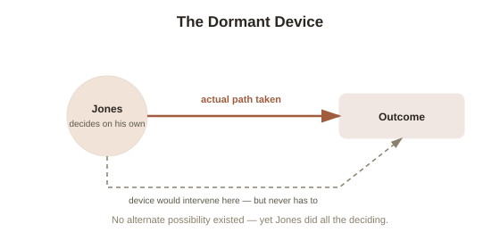

Chapter 4: Frankfurt Cases — Does Responsibility Need Alternate Possibilities?
Chapter 3 ended on a specific, narrower question: does moral responsibility genuinely require that you could have done otherwise? That requirement — sometimes called the Principle of Alternate Possibilities (PAP — the claim that a person is only morally responsible for an act if they could have done something else instead) — sounds obviously true. Philosopher Harry Frankfurt built a thought experiment in 1969 specifically to show that it isn't, and it's reshaped the debate ever since.
The setup: a hidden failsafe that's never actually triggered
Imagine Jones is deciding whether to do something — say, cast a vote a certain way. Unknown to Jones, a neuroscientist named Black has implanted a device in Jones's brain that can monitor exactly what Jones is about to decide. If Black's device detects any sign that Jones is about to decide differently from what Black wants, it will intervene and force the intended outcome. But here's the key structural detail: Jones, entirely on his own, decides to do exactly what Black wanted anyway — so the device never activates at all. It sits there, fully capable of overriding Jones, but plays no role whatsoever in what actually happens, because Jones's own reasoning got there first, unassisted.

The verdict Frankfurt was after
Here's the twist Frankfurt built the thought experiment to expose: Jones could not have done otherwise — the device guaranteed the outcome, whether Jones cooperated or not. By the Principle of Alternate Possibilities, that should mean Jones isn't morally responsible for his choice. But nearly everyone's intuition says the opposite: Jones reasoned it through and decided entirely on his own, with the device playing zero actual role in the outcome, so it seems obviously wrong to say he isn't responsible just because an unused, never-triggered failsafe happened to exist in the background. Frankfurt's conclusion is that the Principle of Alternate Possibilities is false: what actually matters for responsibility isn't whether alternatives were technically available somewhere in the causal background, but whether the actual sequence that produced the action — your own reasoning, your own motives — is the kind that grounds responsibility, regardless of whether some unexercised alternative existed or not.
Why this genuinely helps compatibilism
This connects directly back to the hard determinism problem from Chapter 1. If determinism is true, then in a sense, every single decision anyone has ever made is structurally a Frankfurt case: the entire prior state of the universe functions like Black's device, guaranteeing one specific outcome, such that no one could ever, in the strictest sense, have done otherwise. If the Principle of Alternate Possibilities were really required for responsibility, hard determinism would make it universally impossible — but if Frankfurt is right that alternate possibilities were never actually the thing responsibility depended on, that objection loses its force. What matters instead is whether your actual decision arose from your own reasoning and motives, in the way compatibilism from Chapter 1 already described — not whether some parallel, never-taken path was technically open. Frankfurt cases don't prove compatibilism is correct, but they knock out what had been considered one of the strongest arguments against it.
Where the counterattack lands
Frankfurt's argument has a serious, still-unresolved weak point, sometimes called the dilemma defense. Critics point out that for the device to reliably know, in advance, exactly what Jones is about to decide — so it can wait, dormant, only if Jones is already headed the "right" way — there needs to be some earlier, detectable sign of which way Jones is leaning before he's fully decided. But if such a sign genuinely exists and reliably predicts the outcome, that starts to look suspiciously like alternate possibilities were never really absent in the first place — just pushed one step further back, to whatever process the device is reading in advance. If, instead, there's truly no earlier sign at all, it becomes unclear how the device could work as advertised without either occasionally intervening or getting lucky. Defenders of Frankfurt have spent decades constructing increasingly elaborate versions of the case to dodge this dilemma; critics have kept finding new versions of the same objection lurking inside each patch. It remains one of the most technically contested exchanges in contemporary philosophy of action — a genuinely unresolved argument, not a settled one.
Try this
Ideas for noticing or testing this in your own life.
- Run your own intuition on Jones directly: before reading Frankfurt's conclusion, would you have said Jones was responsible? Notice whether your gut reaction lines up with the Principle of Alternate Possibilities or against it.
- Look for a real-life "Frankfurt structure" in your own decisions — a rule, a deadline, or a consequence that would have forced a certain outcome, but that you beat to the decision on your own anyway. Does knowing the failsafe was there change how responsible you feel for the choice?
Worth pulling on?
A few loose threads from this chapter — if any of these genuinely grab you, that's a good sign of where to go next.
- Everything in this topic so far has stayed at the level of philosophical argument — but the legal system has to actually rule on responsibility, every day, without waiting for philosophers to settle any of it. → The subject of the final chapter in this topic: how the law actually handles free will and responsibility in practice.
- Frankfurt separately argued that what makes desires genuinely "yours" isn't just having them, but endorsing them at a higher level — wanting to want what you want. → Not covered here — his related theory of free will as identification with your own desires is worth its own read if the "actual sequence" idea in this chapter grabbed you.